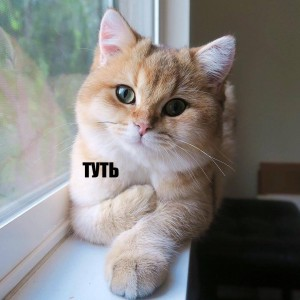

ПОЧЕМУ ИМЕННО МЫ?
Расписан разный очень интересный текст обо всем.
Это моя первая лабораторная работа.
Всегда пишу в слове "лабораторная" после буквы "р" - букву "о". Неграмотный.
Съешь ещё этих мягких французских булок, да выпей чаю.
Съешь ещё этих мягких французских булок, да выпей чаю.
Съешь ещё этих мягких французских булок, да выпей чаю.
Съешь ещё этих мягких французских булок, да выпей чаю.
Съешь ещё этих мягких французских булок, да выпей чаю
НАШИ СОТРУДНИКИ

КОТИК НОМЕР 1
ГОВОРИТЬ О НЕМ НЕ НУЖНО, ОЧЕНЬ ТАЛАНТЛИВЫЙ
Съешь ещё этих мягких французских булок, да выпей чаю.
КОТИК НОМЕР 2
БОЛЬШОЙ МОЛОДЕЦ, НО ИНОГДА ОШИБАЕТСЯ
Съешь ещё этих мягких французских булок, да выпей чаю.
КОТИК НОМЕР 3
ЛУЧШЕ ВСЕХ БЬЕТ ТАТУАЖ БРОВЕЙ И ГУБ
Съешь ещё этих мягких французских булок, да выпей чаю.
Contact Us